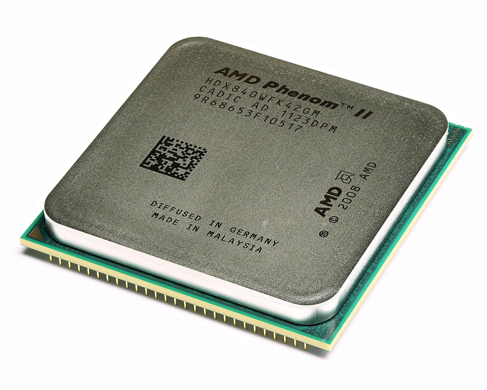

Видеокарты
Обладающая эффектным дизайном видеокарта MSI GeForce GTX 1650 D6 VENTUS XS OC V1 [GTX 1650 D6 VENTUS XS OCV1] способна удовлетворить потребности любителей игр, которые не перенасыщены очень сложной, ресурсоемкой графикой. Цена - 16 500 руб
Современные видеокарты не ограничиваются простым выводом изображения, они имеют встроенный графический процессор, который может производить дополнительную обработку, снимая эту задачу с центрального процессора компьютера. Например, все современные видеокарты Nvidia и AMD (ATi) осуществляют рендеринг графического конвейера OpenGL и DirectX и Vulkan на аппаратном уровне. В последнее время также имеет место тенденция использовать вычислительные возможности графического процессора для решения графических задач.

Процессоры
Процессор Phenom II X4 Шестиядерные процессор, основанный на чипах Thuban, входят в состав платформы AMD Leo. Цена 1500 руб

Материнские Платы
Соответствующая форм-фактору Micro-ATX материнская плата GIGABYTE A320M-A PRO отличается компактностью: габаритные размеры устройства составляют 226x187 мм. Цена 5000 руб
Ноутбук Maibenben M543 представляет собой мощный лэптоп с предустановленной операционной системой Linux. Модель поддерживает ОС Windows 10 и 11 версии. Цена 35 000 руб
Артём Галустян Эдуардович Адрес: Российская Федерация, Ставропольский Край,С. Вин-Сады,Ул.Комсомольская 9 Тел: 8(928)388-23-23 Email:Gleb.tort@mail.ru
Ноутбуки